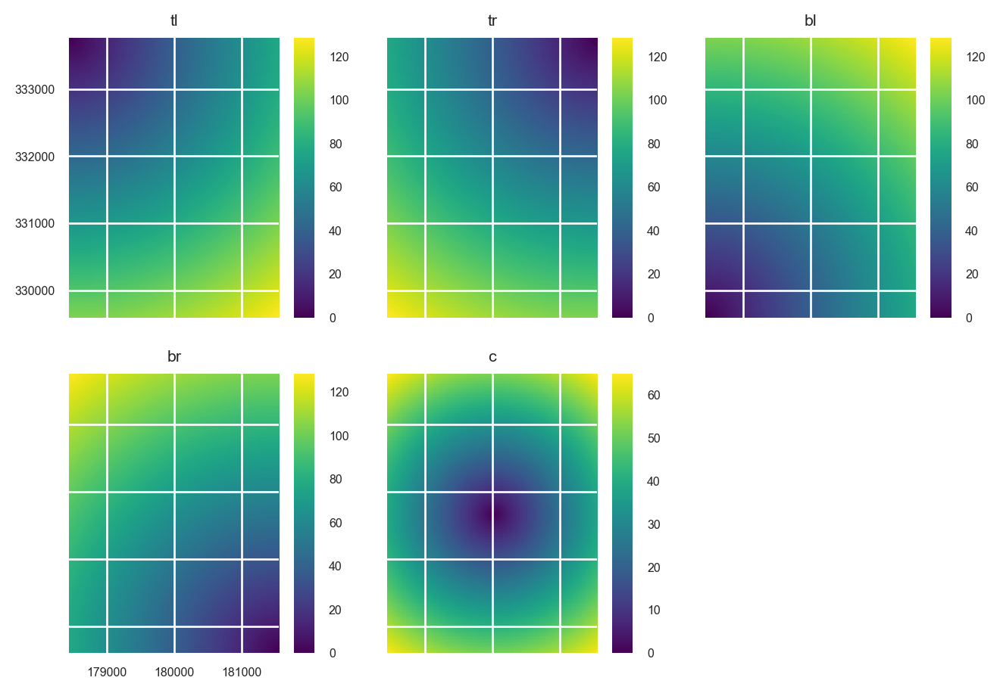
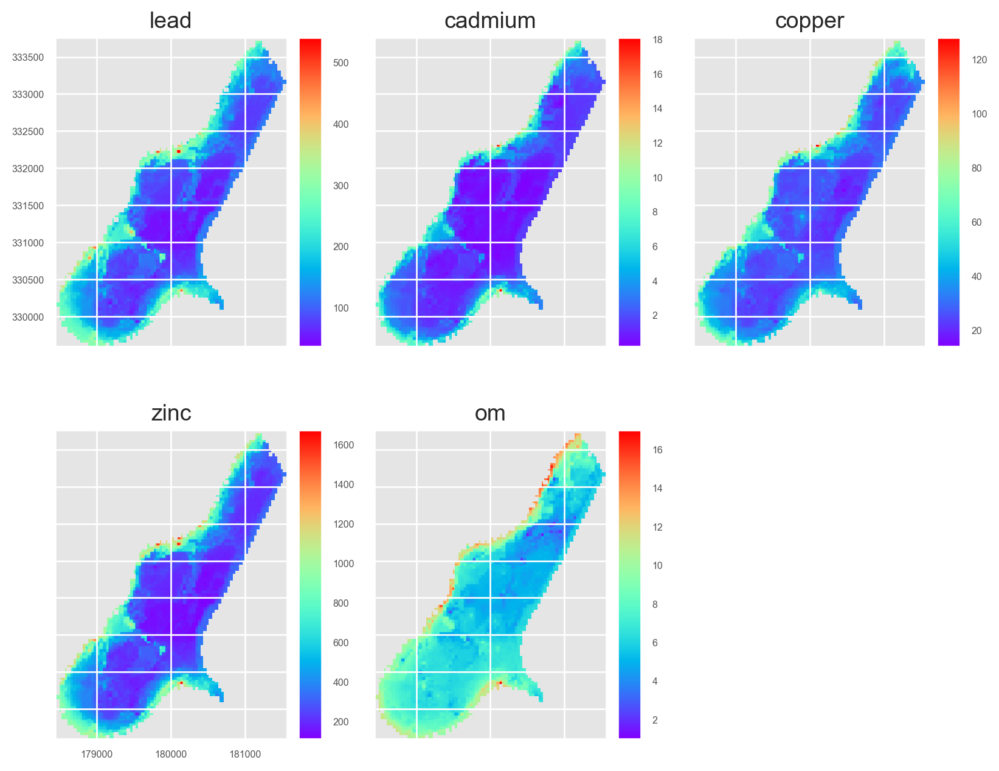

from copy import deepcopy
from tempfile import NamedTemporaryFile
import geopandas as gpd
import numpy as np
from pyspatialml import Raster
from pyspatialml.preprocessing import xy_coordinates, distance_to_corners
import pyspatialml.datasets.meuse as ms
import matplotlib as mpl
import matplotlib.pyplot as plt
from matplotlib import cmMulti-Target Spatial Prediction using the Meuse Dataset
Here we are using the meuse dataset which is included in the pyspatialml package as an example of performing a spatial model and prediction. We can access the datasets using the pyspatialml.datasets module:
predictor_files = ms.predictors
training_pts_file = ms.meusestack = Raster(predictor_files)
stack.namesdict_keys(['chnl_dist', 'dem', 'dist', 'ffreq', 'landimg2', 'landimg3', 'landimg4', 'mrvbf', 'rsp', 'slope', 'soil', 'twi'])Pyspatialml implements pandas-style indexing for Raster objects, using Raster.loc to index by the name of the raster, and Raster.iloc to select by index. This method also accepts slices. Label-based indexing is also provided directly by the __getattr_ magic method, i.e. Raster[name] or for multiple layers Raster[(names)].
For example we can remove layers from Raster object using the Raster.drop method, or by subsetting the raster:
stack.drop('ffreq')Raster Object Containing 11 Layers
attribute values
0 names [chnl_dist, dem, dist, landimg2, landimg3, lan...
1 files [/Users/stevenpawley/GitHub/Pyspatialml/pyspat...
2 rows 104
3 cols 78
4 res (40.0, 40.0)
5 nodatavals [-99999.0, -99999.0, -1.0, -1.0, -1.0, -1.0, -...We can store matplotlib cmaps as an attribute within each layer in the Raster:
stack.chnl_dist.cmap = 'RdBu'
stack.dem.cmap = 'terrain'
stack.dist.cmap = 'Reds'
stack.landimg2.cmap = 'Greys'
stack.landimg3.cmap = 'Greys'
stack.landimg4.cmap = 'Greys'
stack.landimg4.cmap = 'Greys'
stack.mrvbf.cmap = 'jet'
stack.rsp.cmap = 'gnuplot2'
stack.slope.cmap = 'PuRd'
stack.soil.cmap = 'Set2'
stack.twi.cmap = 'coolwarm'Plot the predictors in the Raster object as a raster matrix:
mpl.style.use('seaborn-v0_8')
axs = stack.plot(figsize=(9, 7))
ax = axs.flatten()[10]
im = ax.images
im[0].colorbar.set_ticks([1,2,3])
ax = axs.flatten()[8]
ax.tick_params(axis='x', labelrotation=65)
plt.tight_layout()
plt.show()Feature Engineering
We want the prediction results to be dependent on the spatial locations of the training data. So to include spatial information, coordinate grids can be generated and added to the Raster object:
xy_layer = xy_coordinates(
layer=stack.iloc[0],
file_path=NamedTemporaryFile(suffix=".tif").name
)xy_layer = xy_coordinates(
layer=stack.iloc[0],
file_path=NamedTemporaryFile(suffix=".tif").name
)
edms = distance_to_corners(
layer=stack.iloc[0],
file_path=NamedTemporaryFile(suffix=".tif").name
)
edms.rename(
{old: new for (old, new) in zip(edms.names, ["tl", "tr", "bl", "br", "c"])},
in_place=True
)
edms.plot()
plt.show()
Append them to the Raster object:
stack = stack.append([xy_layer, edms])Plot the new predictors:
axs = stack.plot(figsize=(9, 7))
ax = axs.flatten()[10]
im = ax.images
im[0].colorbar.set_ticks([1,2,3])
ax = axs.flatten()[8]
ax.tick_params(axis='x', labelrotation=65)
plt.tight_layout()
plt.show()The area that is filled by some of the grids is different. This doesn’t matter for the prediction because pixels in the Raster object that include some NaNs in some of the layers will be removed. However, the plots could potentially be given a cleaner look. We can use the Raster.intersect method to fix this:
stack = stack.intersect()axs = stack.plot(figsize=(9, 7))
ax = axs.flatten()[10]
im = ax.images
im[0].colorbar.set_ticks([1,2,3])
ax = axs.flatten()[8]
ax.tick_params(axis='x', labelrotation=65)
plt.tight_layout()
plt.show()Read the Meuse Dataset
training_pts = gpd.read_file(training_pts_file)
training_pts.head()| cadmium | copper | lead | zinc | elev | dist | om | ffreq | soil | lime | landuse | dist.m | geometry | |
|---|---|---|---|---|---|---|---|---|---|---|---|---|---|
| 0 | 11.7 | 85.0 | 299.0 | 1022.0 | 7.909 | 0.001358 | 13.6 | 1 | 1 | 1 | Ah | 50.0 | POINT (181072.000 333611.000) |
| 1 | 8.6 | 81.0 | 277.0 | 1141.0 | 6.983 | 0.012224 | 14.0 | 1 | 1 | 1 | Ah | 30.0 | POINT (181025.000 333558.000) |
| 2 | 6.5 | 68.0 | 199.0 | 640.0 | 7.800 | 0.103029 | 13.0 | 1 | 1 | 1 | Ah | 150.0 | POINT (181165.000 333537.000) |
| 3 | 2.6 | 81.0 | 116.0 | 257.0 | 7.655 | 0.190094 | 8.0 | 1 | 2 | 0 | Ga | 270.0 | POINT (181298.000 333484.000) |
| 4 | 2.8 | 48.0 | 117.0 | 269.0 | 7.480 | 0.277090 | 8.7 | 1 | 2 | 0 | Ah | 380.0 | POINT (181307.000 333330.000) |
Plot the training points:
from mpl_toolkits.axes_grid1 import make_axes_locatable
fig, axs = plt.subplots(2, 3, figsize=(8.5, 7))
for i, (ax, target) in enumerate(zip(axs.ravel(), ['cadmium', 'copper', 'lead', 'zinc', 'om'])):
ax.set_title(target.title())
divider = make_axes_locatable(ax)
cax = divider.append_axes("right", size="10%", pad=0.05)
training_pts.plot(column=target, legend=True, ax=ax, cax=cax, cmap='viridis')
if i != 0:
ax.set_yticklabels([])
if i != 3:
ax.set_xticklabels([])
else:
ax.tick_params(axis='x', labelrotation=65)
fig.delaxes(axs.flatten()[i+1])
plt.tight_layout()
plt.show()Extract Raster Values at the Training Point Locations
Pixel values from a Raster object can be extracted using geometries within a geopandas.GeoDataFrame (points, lines, polygons) or by using labelled pixels from another raster with the same dimensions and crs.
By default the extracted values are returned as a geopandas.GeoDataFrame that contains the data and the coordinates of the pixels:
training_df = stack.extract_vector(gdf=training_pts)
training_df.index = training_df.index.get_level_values("geometry_idx")
training_df = training_df.merge(
training_pts.loc[:, ("lead", "cadmium", "copper", "zinc", "om")],
left_index=True,
right_index=True
) training_df = training_df.dropna()
training_df.head()| chnl_dist | dem | dist | ffreq | landimg2 | landimg3 | landimg4 | mrvbf | rsp | slope | ... | tr | bl | br | c | geometry | lead | cadmium | copper | zinc | om | |
|---|---|---|---|---|---|---|---|---|---|---|---|---|---|---|---|---|---|---|---|---|---|
| geometry_idx | |||||||||||||||||||||
| 0 | 0.000000 | 3214.0 | 0.001358 | 1.0 | 97.0 | 92.0 | 192.0 | 3.523824e-06 | 0.000000 | 1.423307 | ... | 12.369317 | 119.268608 | 100.717430 | 55.470715 | POINT (181072.000 333611.000) | 299.0 | 11.7 | 85.0 | 1022.0 | 13.6 |
| 1 | 79.849854 | 3402.0 | 0.012224 | 1.0 | 160.0 | 183.0 | 183.0 | 9.879866e-06 | 0.082085 | 1.286004 | ... | 13.928389 | 117.046997 | 98.858482 | 53.235325 | POINT (181025.000 333558.000) | 277.0 | 8.6 | 81.0 | 1141.0 | 14.0 |
| 2 | 0.000000 | 3277.0 | 0.103029 | 1.0 | 178.0 | 209.0 | 179.0 | 1.340742e-03 | 0.000000 | 0.674711 | ... | 10.295630 | 119.281181 | 98.412399 | 55.226807 | POINT (181165.000 333537.000) | 199.0 | 6.5 | 68.0 | 640.0 | 13.0 |
| 3 | 184.743164 | 3563.0 | 0.190094 | 1.0 | 114.0 | 135.0 | 152.0 | 6.547428e-07 | 0.192325 | 1.413479 | ... | 8.485281 | 120.208153 | 97.185387 | 56.035702 | POINT (181298.000 333484.000) | 116.0 | 2.6 | 81.0 | 257.0 | 8.0 |
| 4 | 16.768555 | 3406.0 | 0.277090 | 1.0 | 133.0 | 154.0 | 151.0 | 1.588824e-03 | 0.016689 | 0.531276 | ... | 11.661903 | 117.004272 | 93.193344 | 52.801514 | POINT (181307.000 333330.000) | 117.0 | 2.8 | 48.0 | 269.0 | 8.7 |
5 rows × 25 columns
Developing a Machine Learning Model
Here we are going to create a machine learning pipeline that correctly handles categorical predictors via one-hot encoding:
stack.namesdict_keys(['chnl_dist', 'dem', 'dist', 'ffreq', 'landimg2', 'landimg3', 'landimg4', 'mrvbf', 'rsp', 'slope', 'soil', 'twi', 'x_coordinates', 'y_coordinates', 'tl', 'tr', 'bl', 'br', 'c'])from sklearn.pipeline import Pipeline
from sklearn.ensemble import ExtraTreesRegressor
from sklearn.preprocessing import OneHotEncoder
from sklearn.compose import ColumnTransformer
soil_idx = [i for i, name in enumerate(stack.names) if name == 'soil']
trans = ColumnTransformer([
('ohe', OneHotEncoder(categories='auto', handle_unknown='ignore'), soil_idx)
], remainder='passthrough')
et = ExtraTreesRegressor(n_estimators=500, n_jobs=-1, random_state=1234)
et = Pipeline([
('preproc', trans),
('regressor', et)])Now we can separate our response and predictor variables and train the model:
X = training_df.loc[:, stack.names]
y = training_df.loc[:, ['lead', 'cadmium', 'copper', 'zinc', 'om']]
et.fit(X, y)Pipeline(steps=[('preproc',
ColumnTransformer(remainder='passthrough',
transformers=[('ohe',
OneHotEncoder(handle_unknown='ignore'),
[10])])),
('regressor',
ExtraTreesRegressor(n_estimators=500, n_jobs=-1,
random_state=1234))])In a Jupyter environment, please rerun this cell to show the HTML representation or trust the notebook. On GitHub, the HTML representation is unable to render, please try loading this page with nbviewer.org.
Pipeline(steps=[('preproc',
ColumnTransformer(remainder='passthrough',
transformers=[('ohe',
OneHotEncoder(handle_unknown='ignore'),
[10])])),
('regressor',
ExtraTreesRegressor(n_estimators=500, n_jobs=-1,
random_state=1234))])ColumnTransformer(remainder='passthrough',
transformers=[('ohe', OneHotEncoder(handle_unknown='ignore'),
[10])])[10]
OneHotEncoder(handle_unknown='ignore')
['chnl_dist', 'dem', 'dist', 'ffreq', 'landimg2', 'landimg3', 'landimg4', 'mrvbf', 'rsp', 'slope', 'twi', 'x_coordinates', 'y_coordinates', 'tl', 'tr', 'bl', 'br', 'c']
passthrough
ExtraTreesRegressor(n_estimators=500, n_jobs=-1, random_state=1234)
To evaluate the performance of the model, we will use 10-fold cross validation:
from sklearn.model_selection import cross_validate, KFold
outer = KFold(n_splits=10, shuffle=True, random_state=1234)
scores = cross_validate(et, X, y, scoring='neg_mean_squared_error', cv=10, n_jobs=1)
rmse = np.sqrt(-scores['test_score']).mean()
print("Our RMSE score is {}".format(rmse))Our RMSE score is 105.19227221271413Feature Importances
ohe_names = deepcopy(list(stack.names))
ohe_names.insert(soil_idx[0], 'soil1')
ohe_names.insert(soil_idx[0], 'soil2')
ohe_names = np.array(ohe_names)mpl.style.use('ggplot')
fimp = et.named_steps['regressor'].feature_importances_
fig, ax = plt.subplots(figsize=(4, 6))
ax.barh(y=ohe_names[fimp.argsort()], width=fimp[fimp.argsort()])
ax.set_xlabel('Feature Importance Score')
plt.show()Prediction on the Raster object
preds = stack.predict(et)
preds.rename(
{old: new for old, new in zip(preds.names, ['lead', 'cadmium', 'copper', 'zinc', 'om'])},
in_place=True
)
preds.lead.cmap = 'rainbow'
preds.cadmium.cmap = 'rainbow'
preds.copper.cmap = 'rainbow'
preds.zinc.cmap = 'rainbow'
preds.om.cmap = 'rainbow'/Users/stevenpawley/Library/Caches/pypoetry/virtualenvs/pyspatialml-NqZ1tMUm-py3.11/lib/python3.11/site-packages/sklearn/base.py:493: UserWarning: X does not have valid feature names, but OneHotEncoder was fitted with feature names
warnings.warn(
/Users/stevenpawley/Library/Caches/pypoetry/virtualenvs/pyspatialml-NqZ1tMUm-py3.11/lib/python3.11/site-packages/sklearn/base.py:493: UserWarning: X does not have valid feature names, but OneHotEncoder was fitted with feature names
warnings.warn(Plot the results:
preds.plot(out_shape=(200, 200), title_fontsize=14, figsize=(10, 8))
plt.show()